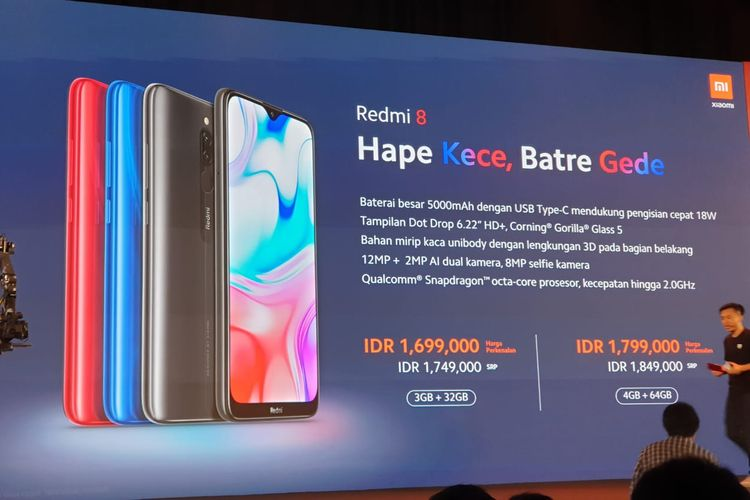
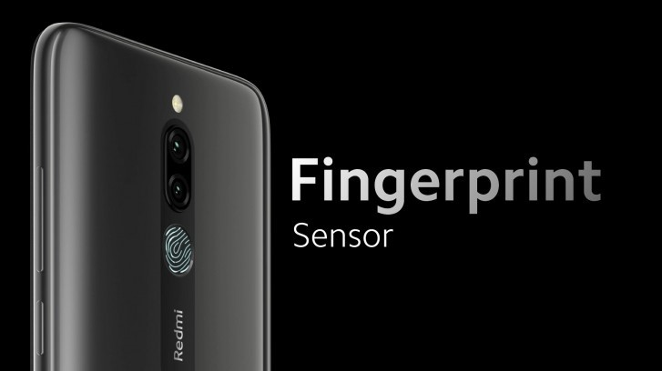
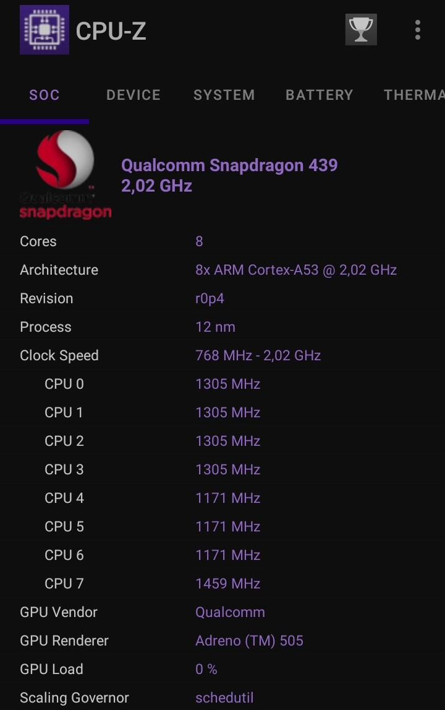
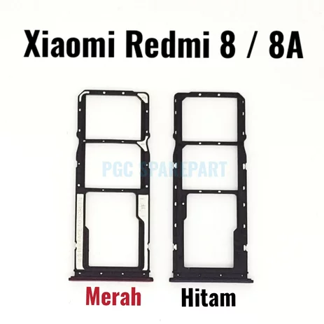
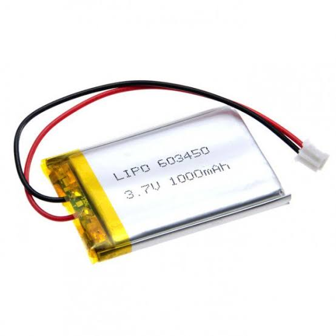

REDMI 8
Teknologi yang serba digital telah mengubah fundamental cara kita hidup dan berinteraksi dengan dunia, dan handphone adalah salah satu inovasi paling mencolok dalam perubahan ini. Handphone modern bukan hanya alat komunikasi, tetapi juga pusat kontrol yang memungkinkan akses instan ke informasi, hiburan, produktivitas, dan banyak lagi. Dengan konektivitas internet yang luas, kita memiliki kemampuan untuk terhubung dengan siapa pun di seluruh dunia, berbagi momen hidup, dan menjalankan bisnis di ujung jari kita. Aplikasi yang beragam, termasuk media sosial, layanan streaming, dan perangkat lunak produktivitas, memberikan fleksibilitas yang belum pernah ada sebelumnya. Selain itu, handphone juga memainkan peran penting dalam revolusi digital, mengubah cara kita bekerja, belajar, bermain, dan bahkan merawat kesehatan kita. Semua ini membuat handphone menjadi salah satu simbol utama dari era teknologi digital yang telah mengubah cara kita berinteraksi dengan dunia di sekitar kita.
Teknologi yang semakin maju menghadirkan gadget low budget seperti Redmi 8 yang menawarkan pengalaman yang memukau dalam setiap segmen. Ditenagai oleh prosesor yang kuat dan efisien, serta didukung oleh RAM yang memadai, Redmi 8 memungkinkan pengguna untuk menjalankan aplikasi, bermain game, dan melakukan tugas sehari-hari dengan lancar. Layar HD+ yang luas dan tajam memberikan tampilan visual yang memukau, sedangkan kapasitas baterai yang besar memastikan daya tahan yang luar biasa. Selain itu, kamera ganda di bagian belakang memungkinkan pengambilan foto yang berkualitas tinggi, sementara desain fisik yang menarik dan build quality yang kuat menjadikannya salah satu pilihan gadget yang sangat menarik di segmennya. Dengan teknologi yang dihadirkan oleh Redmi 8, pengguna dapat menikmati kecanggihan yang tinggi tanpa harus menguras dompet, menjadikannya pilihan yang menarik bagi mereka yang mencari kombinasi antara kinerja, daya tahan, dan harga yang terjangkau.
RILIS
edmi 8 adalah smartphone yang dirilis oleh perusahaan Xiaomi pada 12 October tahun 2019. Smartphone ini merupakan salah satu dari serangkaian ponsel cerdas yang populer dari merek Redmi yang dikenal dengan harga terjangkau dan spesifikasi yang kompetitif. Smartphone ini menjalankan sistem operasi MIUI yang berbasis pada Android. Selain itu, Redmi 8 memiliki desain fisik yang menarik dengan pilihan warna yang beragam, membuatnya menjadi salah satu smartphone yang diminati dalam segmen harga yang terjangkau. Dengan fitur-fitur ini, rilis Redmi 8 telah mendapatkan perhatian positif dan menjadi pilihan yang populer di kalangan pengguna yang mencari smartphone berkualitas dengan harga yang terjangkau.
BODY
Redmi 8 memiliki desain fisik yang menarik dengan fokus pada daya tahan dan estetika. Dengan dimensi = 156.5 x 75.4 x 9.4 mm dan bodynya terbuat dari material berkualitas tinggi dengan finishing glossy yang memberikan tampilan yang elegan. Memiliki berat 188 g yang tidak begitu ebrat ketika dipegang. Dilengkapi dengan Dual SIM (NanO SIM dan dual stand-by). Pada bagian depan, Anda akan menemukan layar sentuh berukuran besar dengan size 6.22 inches dengan notch tetesan air yang elegan di bagian atas, yang berfungsi untuk menampung kamera selfie. Sementara di bagian belakang, terdapat desain berlian yang menarik, serta modul kamera ganda yang ditempatkan secara vertikal dengan pemisah sidik jari di bawahnya. Selain itu, terdapat sensor sidik jari di bagian belakang untuk membuka kunci perangkat dengan cepat dan aman.
Kualitas konstruksi yang solid dan desain yang menarik membuat body Redmi 8 cocok untuk penggunaan sehari-hari yang tahan lama dan tampil stylish. Selain itu, smartphone ini juga memiliki lapisan pelindung Corning Gorilla Glass di layar depannya untuk melindungi dari goresan dan benturan ringan, menambah daya tahan dan daya tarik desainnya.
SISTEM OPERASI
Redmi 8 menjalankan sistem operasi MIUI, yang dikembangkan oleh Xiaomi dan berbasis pada sistem operasi Android. MIUI adalah antarmuka pengguna yang kaya fitur yang menawarkan banyak opsi kustomisasi dan peningkatan dibandingkan dengan Android murni. Redmi 8 menjalankan sistem operasi MIUI, yang dikembangkan oleh Xiaomi dan berbasis pada sistem operasi Android. MIUI adalah antarmuka pengguna yang kaya fitur yang menawarkan banyak opsi kustomisasi dan peningkatan dibandingkan dengan Android murni. Menggunakan Sistem Operasi Android 9.0 (Pie), upgradable to Android 10, dengan MIUI 12
Redmi 8 menggunakan chipset Qualcomm Snapdragon 439 (12 nm), yang merupakan chipset kelas menengah yang dikembangkan oleh Qualcomm. engan CPU = Octa-core (4x1.95 GHz Cortex-A53 & 4x1.45 GHz Cortex A53). Berikut adalah beberapa kelebihan chipset ini:
1. Kinerja yang Seimbang: Snapdragon 439 menghadirkan kinerja yang cukup seimbang untuk penggunaan sehari-hari. Ditenagai oleh delapan inti prosesor Cortex-A53, chipset ini mampu menangani tugas-tugas seperti penjelajahan web, penggunaan perkantoran, dan aplikasi umum dengan baik.
2. Grafis Adreno: Snapdragon 439 dilengkapi dengan GPU Adreno 505 yang memberikan kinerja grafis yang cukup baik untuk smartphone kelas menengah. Ini memungkinkan pengguna untuk menjalankan permainan ringan hingga sedang dengan lancar.
3. Efisiensi Daya: Salah satu keunggulan Snapdragon 439 adalah efisiensi daya. Dengan proses fabrikasi 12nm, chipset ini dapat memberikan kinerja yang cukup baik sambil menjaga daya tahan baterai yang tinggi. Hal ini membuatnya cocok untuk penggunaan sepanjang hari tanpa perlu sering pengisian daya.
4. Konektivitas: Snapdragon 439 mendukung konektivitas 4G LTE yang cepat, Bluetooth, Wi-Fi, dan teknologi lokasi seperti GPS.
5. Audio: Chipset ini juga mendukung teknologi audio yang baik, termasuk dukungan untuk teknologi codec audio HD.
Snapdragon 439 adalah chipset yang diadopsi dalam Redmi 8 untuk memberikan kinerja yang memadai untuk kebutuhan sehari-hari dan menjaga daya tahan baterai yang baik. Ini adalah salah satu faktor yang membuat Redmi 8 menjadi pilihan yang populer di segmen harga yang terjangkau.
MEMORY
Redmi 8 hadir dengan pilihan memori internal yang bisa berbeda-beda berdasarkan varian yang dipilih. Memori internal pada Redmi 8 biasanya tersedia dalam dua pilihan utama:
1. 64GB Internal Storage : Varian ini memiliki kapasitas penyimpanan internal sebesar 64 gigabyte. Ini adalah pilihan yang baik jika Anda memiliki banyak aplikasi, file, foto, dan video yang ingin Anda simpan di ponsel Anda. Ini memberikan cukup ruang untuk penggunaan sehari-hari dan memungkinkan penyimpanan sejumlah besar data.
2. 32GB Internal Storage : Beberapa varian Redmi 8 mungkin hadir dengan kapasitas penyimpanan internal 32GB. Meskipun ini sedikit lebih rendah dibandingkan dengan 64GB, ini masih cukup untuk kebanyakan pengguna. Dengan manajemen penyimpanan yang cermat, Anda masih dapat menginstal aplikasi, menyimpan foto, dan file Anda dengan nyaman.
Selain itu, baik kapasitas 32GB maupun 64GB pada Redmi 8 umumnya dapat diperluas dengan kartu microSD eksternal, yang memungkinkan Anda menambahkan lebih banyak ruang penyimpanan sesuai kebutuhan Anda.
KAMERA

Redmi 8 dilengkapi dengan sistem kamera yang cukup solid untuk smartphone di segmen harga yang terjangkau. Berikut penjelasan tentang kamera pada Redmi 8:
1. Kamera Belakang Ganda: Redmi 8 memiliki kamera belakang ganda yang terdiri dari lensa utama dan lensa kedalaman (depth sensor). Lensa utama ini biasanya memiliki resolusi 12MP, yang cukup untuk mengambil foto dengan detail yang baik dalam berbagai situasi cahaya. Lensa kedalaman berguna untuk menciptakan efek bokeh (background blur) dalam foto potret.
3. **Kamera Selfie: Kamera depan Redmi 8 biasanya memiliki resolusi 8MP. Ini memungkinkan pengguna untuk mengambil selfie yang berkualitas dan berpartisipasi dalam panggilan video dengan jelas.
5. **Perekaman Video: Smartphone ini biasanya mendukung perekaman video hingga resolusi Full HD (1080p), yang memungkinkan pengguna untuk membuat video dengan kualitas yang baik.
6. Mode Kamera Tambahan: Redmi 8 mungkin juga memiliki mode kamera tambahan, seperti, mode potret, mode mode pro, selang waktu, vedeo pendek dan mode lainnya untuk memberikan fleksibilitas dalam pengambilan foto.
Kamera pada Redmi 8 memberikan pengguna cukup banyak pilihan untuk mengambil foto dan video yang baik dalam berbagai situasi. Meskipun tidak setara dengan smartphone flagship, kamera pada Redmi 8 memberikan kualitas yang layak dalam segmen harga yang terjangkau.
BATERAI
Redmi 8 memiliki baterai tipe Li-Po (Lithium Polymer) dengan kapasitas besar sebesar 5000 mAh. Ini adalah salah satu keunggulan utama dari perangkat ini dan menjadikannya pilihan yang populer di kalangan pengguna yang menginginkan daya tahan baterai yang tinggi. Memiliki kapasitas 5000 mAh membuat baterai ini mampu memberikan daya tahan yang sangat baik. Pengguna dapat menggunakan ponsel ini sepanjang hari dengan penggunaan yang cukup intensif tanpa perlu sering mengisi daya. Menggunakan fast charging yang membuat pengisian daya yang lebih cepat.
Baterai Li-Po 5000 mAh pada Redmi 8 adalah salah satu fitur unggulan perangkat ini dan merupakan pilihan yang menarik untuk pengguna yang menginginkan daya tahan baterai yang tinggi untuk penggunaan sehari-hari yang intensif.